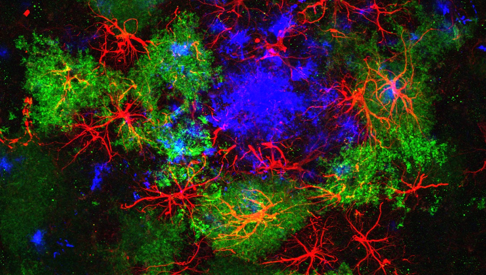

The past four decades demonstrated that non-neuronal cells, called astrocytes, are emerging as crucial players for brain function and dysfunction. A major obstacle of previous and current initiatives on neurotechnologies is a lack of focus on astrocytes and most of the tools used to probe and sense astrocytes are derived from those developed to study neurons. To go further, the ASTROTECH Consortium ─ which combines 11 funding entities and 14 partners in the academia, public research centers and industrial labs, from 9 European and non European countries ─ aims at pioneering the field of "Glial Engineering", to develop a consistent range of tools to record, study, and manipulate astrocytes in the healthy and diseased brain. Pursuing this vision, the objective of my PhD project is to develop a mathematical model of neuron-glia-vascular unit (NGVU), based on biophysical principles of volume transmission in the brain parenchyma. Furthermore, during a training period provided by ASTROTECH within a group of 15 Early Stage Researchers (ESRs), another important part of the project is related to a tight collaboration with industry representatives and the implementation of the model in an open-source simulation platform adopted in the clinical practice. Moreover, in conjunction with biologists and medical doctors, another key point of the project is to test the NGVU model by brain-wide simulations of epileptic seizures with emphasis on new venues for their diagnosis and treatment.
